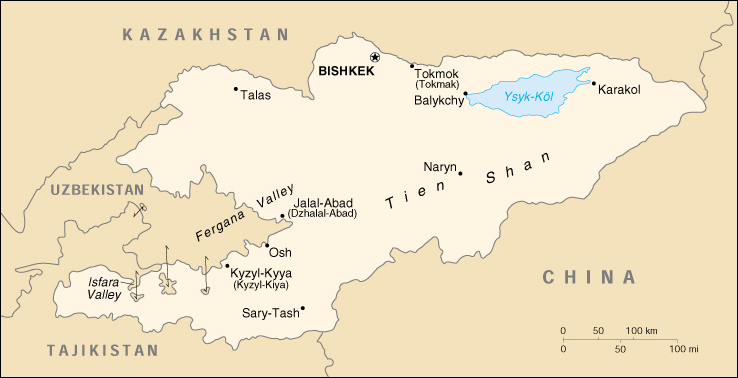

|
Kyrgyzstan | |
| Introduction Geography People Government Economy Communications Transportation Military Transnational Issues | ||
|  | ||
| Kyrgyzstan | Introduction | Top of Page |
| Background: | A Central Asian country of incredible natural beauty and proud nomadic traditions, Kyrgyzstan was annexed by Russia in 1864; it achieved independence from the Soviet Union in 1991. Current concerns include: privatization of state-owned enterprises, expansion of democracy and political freedoms, inter-ethnic relations, and terrorism. |
| Kyrgyzstan | Geography | Top of Page |
| Location: | Central Asia, west of China |
| Geographic coordinates: | 41 00 N, 75 00 E |
| Map references: | Commonwealth of Independent States |
| Area: |
total:
198,500 sq km
land: 191,300 sq km water: 7,200 sq km |
| Area - comparative: | slightly smaller than South Dakota |
| Land boundaries: |
total:
3,878 km
border countries: China 858 km, Kazakhstan 1,051 km, Tajikistan 870 km, Uzbekistan 1,099 km |
| Coastline: | 0 km (landlocked) |
| Maritime claims: | none (landlocked) |
| Climate: | dry continental to polar in high Tien Shan; subtropical in southwest (Fergana Valley); temperate in northern foothill zone |
| Terrain: | peaks of Tien Shan and associated valleys and basins encompass entire nation |
| Elevation extremes: |
lowest point:
Kara-Darya 132 m
highest point: Jengish Chokusu (Pik Pobedy) 7,439 m |
| Natural resources: | abundant hydropower; significant deposits of gold and rare earth metals; locally exploitable coal, oil, and natural gas; other deposits of nepheline, mercury, bismuth, lead, and zinc |
| Land use: |
arable land:
7%
permanent crops: 0% permanent pastures: 44% forests and woodland: 4% other: 45% (1993 est.) note: Kyrgyzstan has the world's largest natural growth walnut forest |
| Irrigated land: | 9,000 sq km (1993 est.) |
| Natural hazards: | NA |
| Environment - current issues: | water pollution; many people get their water directly from contaminated streams and wells; as a result, water-borne diseases are prevalent; increasing soil salinity from faulty irrigation practices |
| Environment - international agreements: |
party to:
Air Pollution, Biodiversity, Climate Change, Desertification, Hazardous Wastes, Ozone Layer Protection
signed, but not ratified: none of the selected agreements |
| Geography - note: | landlocked |
| Kyrgyzstan | People | Top of Page |
| Population: | 4,753,003 (July 2001 est.) |
| Age structure: |
0-14 years:
35.03% (male 841,029; female 823,723)
15-64 years: 58.83% (male 1,369,842; female 1,426,522) 65 years and over: 6.14% (male 110,340; female 181,547) (2001 est.) |
| Population growth rate: | 1.44% (2001 est.) |
| Birth rate: | 26.18 births/1,000 population (2001 est.) |
| Death rate: | 9.13 deaths/1,000 population (2001 est.) |
| Net migration rate: | -2.66 migrant(s)/1,000 population (2001 est.) |
| Sex ratio: |
at birth:
1.05 male(s)/female
under 15 years: 1.02 male(s)/female 15-64 years: 0.96 male(s)/female 65 years and over: 0.61 male(s)/female total population: 0.95 male(s)/female (2001 est.) |
| Infant mortality rate: | 76.5 deaths/1,000 live births (2001 est.) |
| Life expectancy at birth: |
total population:
63.46 years
male: 59.2 years female: 67.94 years (2001 est.) |
| Total fertility rate: | 3.19 children born/woman (2001 est.) |
| HIV/AIDS - adult prevalence rate: | less than 0.01% (1999 est.) |
| HIV/AIDS - people living with HIV/AIDS: | less than 100 (1999 est.) |
| HIV/AIDS - deaths: | less than 100 (1999 est.) |
| Nationality: |
noun:
Kyrgyzstani(s)
adjective: Kyrgyzstani |
| Ethnic groups: | Kirghiz 52.4%, Russian 18%, Uzbek 12.9%, Ukrainian 2.5%, German 2.4%, other 11.8% |
| Religions: | Muslim 75%, Russian Orthodox 20%, other 5% |
| Languages: |
Kirghiz (Kyrgyz) - official language, Russian - official language
note: in May 2000, the Kyrgyzstani legislature made Russian an official language, equal in status to Kirghiz |
| Literacy: |
definition:
age 15 and over can read and write
total population: 97% male: 99% female: 96% (1989 est.) |
| Kyrgyzstan | Government | Top of Page |
| Country name: |
conventional long form:
Kyrgyz Republic
conventional short form: Kyrgyzstan local long form: Kyrgyz Respublikasy local short form: none former: Kirghiz Soviet Socialist Republic |
| Government type: | republic |
| Capital: | Bishkek |
| Administrative divisions: |
7 oblastlar (singular - oblast) and 1 city* (singular - shaar); Batken Oblasty, Bishkek Shaary*, Chuy Oblasty (Bishkek), Jalal-Abad Oblasty, Naryn Oblasty, Osh Oblasty, Talas Oblasty, Ysyk-Kol Oblasty (Karakol)
note: administrative divisions have the same names as their administrative centers (exceptions have the administrative center name following in parentheses) |
| Independence: | 31 August 1991 (from Soviet Union) |
| National holiday: | Independence Day, 31 August (1991) |
| Constitution: | adopted 5 May 1993; note - amendment proposed by President AKAYEV and passed in a national referendum on 10 February 1996 significantly expands the powers of the president at the expense of the legislature |
| Legal system: | based on civil law system |
| Suffrage: | 18 years of age; universal |
| Executive branch: |
chief of state:
President Askar AKAYEV (since 28 October 1990)
head of government: Prime Minister Kurmanbek BAKIYEV (since 22 December 2000) cabinet: Cabinet of Ministers appointed by the president on the recommendation of the prime minister elections: president reelected by popular vote for a five-year term; elections last held 29 October 2000 (next to be held November or December 2005); prime minister appointed by the president election results: Askar AKAYEV reelected president; percent of vote - Askar AKAYEV 74%, Omurbek TEKEBAYEV 14%, other candidates 12%; note - election marred by serious irregularities |
| Legislative branch: |
bicameral Supreme Council or Zhogorku Kenesh consists of the Assembly of People's Representatives (70 seats; members are elected by popular vote to serve five-year terms) and the Legislative Assembly (35 seats; members are elected by popular vote to serve five-year terms)
elections: Assembly of People's Representatives - last held 20 February and 12 March 2000 (next to be held NA February 2005); Legislative Assembly - last held 20 February and 12 March 2000 (next to be held NA February 2005) election results: Assembly of People's Representatives - percent of vote by party - NA%; percent of vote by party - NA; and Legislative Assembly - percent of vote by party - NA%; seats by party - NA; note - total seats by party in the Supreme Council were as follows: Union of Democratic Forces 12, Communists 6, My Country Party of Action 4, independents 73, other 10 note: the legislature became bicameral for the 5 February 1995 elections; the 2000 election results include both the Assembly of People's Representatives and the Legislative Assembly |
| Judicial branch: | Supreme Court (judges are appointed for 10-year terms by the Supreme Council on the recommendation of the president); Constitutional Court; Higher Court of Arbitration |
| Political parties and leaders: | Agrarian Labor Party of Kyrgyzstan [Uson S. SYDYKOV]; Agrarian Party of Kyrgyzstan [Arkin ALIYEV]; Ata-Meken Socialist Party or Fatherland [Onurbek TEKEBAYEV]; Banner National Revival Party or ASABA [Chaprashty BAZARBAY]; Democratic Movement of Kyrgyzstan or DDK [Jypar JEKSHEYEV]; Democratic Women's Party of Kyrgyzstan [T. A. SHAILIYEVA]; Dignity Party [Feliks KULOV]; Erkin Kyrgyzstan Progressive and Democratic Party [Tursunbay Bakir UULU]; Justice Party [Chingiz AYTMATOV]; Movement for the People's Salvation [Jumgalbek AMAMBAYEV]; Mutual Help Movement or Ashar [Jumagazy USUPOV]; My Country of Action [Almazbek ISMANKULOV]; National Unity Democratic Movement or DDNE [Yury RAZGULYAYEV]; Party of Communists of Kyrgyzstan or KCP [Absamat M. MASALIYEV]; Party of the Veterans of the War in Afghanistan [leader NA]; Peasant Party [leader NA]; People's Party [Melis ESHIMKANOV]; Poor and Unprotected People's Party [Daniyar USENOV]; Republican Popular Party of Kyrgyzstan [J. SHARSHENALIYEV]; Social Democratic Party or PSD [J. IBRAMOV]; Union of Democratic Forces (composed of Social Democratic Party of Kyrgyzstan or PSD [J. IBRAMOV], Economic Revival Party, and Birimdik Party |
| Political pressure groups and leaders: | Council of Free Trade Unions; Kyrgyz Committee on Human Rights [Ramazan DYRYIDAYEV]; National Unity Democratic Movement; Union of Entrepreneurs |
| International organization participation: | AsDB, CCC, CIS, EAPC, EBRD, ECE, ECO, ESCAP, FAO, IBRD, ICAO, ICRM, IDA, IDB, IFAD, IFC, IFRCS, ILO, IMF, Intelsat, Interpol, IOC, IOM, ISO (correspondent), ITU, NAM (observer), OIC, OPCW, OSCE, PFP, UN, UNAMSIL, UNCTAD, UNESCO, UNIDO, UNMIK, UPU, WFTU, WHO, WIPO, WMO, WToO, WTrO |
| Diplomatic representation in the US: |
chief of mission:
Ambassador Bakyt ABDRISAYEV
chancery: 1732 Wisconsin Avenue NW, Washington, DC 20007 telephone: [1] (202) 338-5141 FAX: [1] (202) 338-5139 |
| Diplomatic representation from the US: |
chief of mission:
Ambassador John M. O'KEEFE
embassy: 171 Prospect Mira, 720016 Bishkek mailing address: use embassy street address telephone: [996] (312) 551-241, (517) 777-217 FAX: [996] (312) 551-264 |
| Flag description: | red field with a yellow sun in the center having 40 rays representing the 40 Kirghiz tribes; on the obverse side the rays run counterclockwise, on the reverse, clockwise; in the center of the sun is a red ring crossed by two sets of three lines, a stylized representation of the roof of the traditional Kirghiz yurt |
| Kyrgyzstan | Economy | Top of Page |
| Economy - overview: | Kyrgyzstan is a small, poor, mountainous country with a predominantly agricultural economy. Cotton, wool, and meat are the main agricultural products and exports. Industrial exports include gold, mercury, uranium, and electricity. Kyrgyzstan has been one of the most progressive countries of the former Soviet Union in carrying out market reforms. Following a successful stabilization program, which lowered inflation from 88% in 1994 to 15% for 1997, attention is turning toward stimulating growth. Much of the government's stock in enterprises has been sold. Drops in production had been severe since the breakup of the Soviet Union in December 1991, but by mid-1995 production began to recover and exports began to increase. Pensioners, unemployed workers, and government workers with salary arrears continue to suffer. Foreign assistance played a substantial role in the country's economic turnaround in 1996-97. Growth was held down to 2.1% in 1998 largely because of the spillover from Russia's economic difficulties, but moved ahead to 3.6% in 1999 and an estimated 5.7% in 2000. The government has adopted a series of measures to combat such persistent problems as excessive external debt, inflation, and inadequate revenue collection. |
| GDP: | purchasing power parity - $12.6 billion (2000 est.) |
| GDP - real growth rate: | 5.7% (2000 est.) |
| GDP - per capita: | purchasing power parity - $2,700 (2000 est.) |
| GDP - composition by sector: |
agriculture:
39%
industry: 22% services: 39% (1999 est.) |
| Population below poverty line: | 51% (1997 est.) |
| Household income or consumption by percentage share: |
lowest 10%:
2.7%
highest 10%: 31.7% (1997) |
| Inflation rate (consumer prices): | 18.7% (2000 est.) |
| Labor force: | 1.7 million |
| Labor force - by occupation: | agriculture 55%, industry 15%, services 30% (1999 est.) |
| Unemployment rate: | 6% (1998 est.) |
| Budget: |
revenues:
$207.4 million
expenditures: $238.7 million, including capital expenditures of $NA (1999 est.) |
| Industries: | small machinery, textiles, food processing, cement, shoes, sawn logs, refrigerators, furniture, electric motors, gold, rare earth metals |
| Industrial production growth rate: |
7% (2000 est.)
|
| Electricity - production: | 12.981 billion kWh (1999) |
| Electricity - production by source: |
fossil fuel:
6.67%
hydro: 93.33% nuclear: 0% other: 0% (1999) |
| Electricity - consumption: | 10.236 billion kWh (1999) |
| Electricity - exports: | 2.02 billion kWh (1999) |
| Electricity - imports: | 184 million kWh (1999) |
| Agriculture - products: | tobacco, cotton, potatoes, vegetables, grapes, fruits and berries; sheep, goats, cattle, wool |
| Exports: | $482 million (f.o.b., 2000 est.) |
| Exports - commodities: | cotton, wool, meat, tobacco; gold, mercury, uranium, hydropower; machinery; shoes |
| Exports - partners: | Germany 33%, Russia 16%, Kazakhstan 10%, Uzbekistan 10%, China 6% (1999) |
| Imports: | $579 million (f.o.b., 2000 est.) |
| Imports - commodities: | oil and gas, machinery and equipment, foodstuffs |
| Imports - partners: | Russia 18%, Kazakhstan 12%, US 9%, Germany 8%, Uzbekistan 8%, China (1999) |
| Debt - external: | $1.4 billion (2000 est.) |
| Economic aid - recipient: | $329.4 million (1995) |
| Currency: | Kyrgyzstani som (KGS) |
| Currency code: | KGS |
| Exchange rates: | soms per US dollar - 48.701 (January 2001), 47.704 (2000), 39.008 (1999), 20.838 (1998), 17.362 (1997), 12.810 (1996) |
| Fiscal year: | calendar year |
| Kyrgyzstan | Communications | Top of Page |
| Telephones - main lines in use: | 351,000 (1997) |
| Telephones - mobile cellular: | NA |
| Telephone system: |
general assessment:
poorly developed; about 100,000 unsatisfied applications for household telephones
domestic: principally microwave radio relay; one cellular provider, probably limited to Bishkek region international: connections with other CIS countries by landline or microwave radio relay and with other countries by leased connections with Moscow international gateway switch and by satellite; satellite earth stations - 1 Intersputnik and 1 Intelsat; connected internationally by the Trans-Asia-Europe (TAE) fiber-optic line |
| Radio broadcast stations: | AM 12 (plus 10 repeater stations), FM 14, shortwave 2 (1998) |
| Radios: | 520,000 (1997) |
| Television broadcast stations: | NA (repeater stations throughout the country relay programs from Russia, Uzbekistan, Kazakhstan, and Turkey) (1997) |
| Televisions: | 210,000 (1997) |
| Internet country code: | .kg |
| Internet Service Providers (ISPs): | NA |
| Internet users: | 10,000 (2000) |
| Kyrgyzstan | Transportation | Top of Page |
| Railways: |
total:
370 km in common carrier service; does not include industrial lines
broad gauge: 370 km 1.520-m gauge (1990) |
| Highways: |
total:
18,500 km (including 140 km of expressways)
paved: 16,854 km (these roads are said to be hard-surfaced, and include, in addition to conventionally paved roads, some that are surfaced with gravel or other coarse aggregate, making them trafficable in all weather) unpaved: 1,646 km (these roads are made of unstabilized earth and are difficult to negotiate in wet weather) (1996) |
| Waterways: | 600 km (1990) |
| Pipelines: | natural gas 200 km |
| Ports and harbors: | Balykchy (Ysyk-Kol or Rybach'ye) |
| Airports: | 50 (2000 est.) |
| Airports - with paved runways: |
total:
4
over 3,047 m: 1 2,438 to 3,047 m: 1 1,524 to 2,437 m: 1 914 to 1,523 m: 1 (2000 est.) |
| Airports - with unpaved runways: |
total:
46
2,438 to 3,047 m: 3 1,524 to 2,437 m: 5 914 to 1,523 m: 6 under 914 m: 32 (2000 est.) |
| Kyrgyzstan | Military | Top of Page |
| Military branches: | Army, Air and Air Defense, Security Forces, Border Troops |
| Military manpower - military age: | 18 years of age |
| Military manpower - availability: | males age 15-49: 1,203,001 (2001 est.) |
| Military manpower - fit for military service: | males age 15-49: 975,744 (2001 est.) |
| Military manpower - reaching military age annually: | males: 50,590 (2001 est.) |
| Military expenditures - dollar figure: | $12 million (FY99) |
| Military expenditures - percent of GDP: | 1% (FY99) |
| Kyrgyzstan | Transnational Issues | Top of Page |
| Disputes - international: | territorial dispute with Tajikistan on southwestern boundary in Isfara Valley area; periodic target of Islamic insurgents from Uzbekistan, Tajikistan, and Afghanistan |
| Illicit drugs: | limited illicit cultivator of cannabis and opium poppy, mostly for CIS consumption; limited government eradication program; increasingly used as transshipment point for illicit drugs to Russia and Western Europe from Southwest Asia |
{kind=link}
{kind=link}